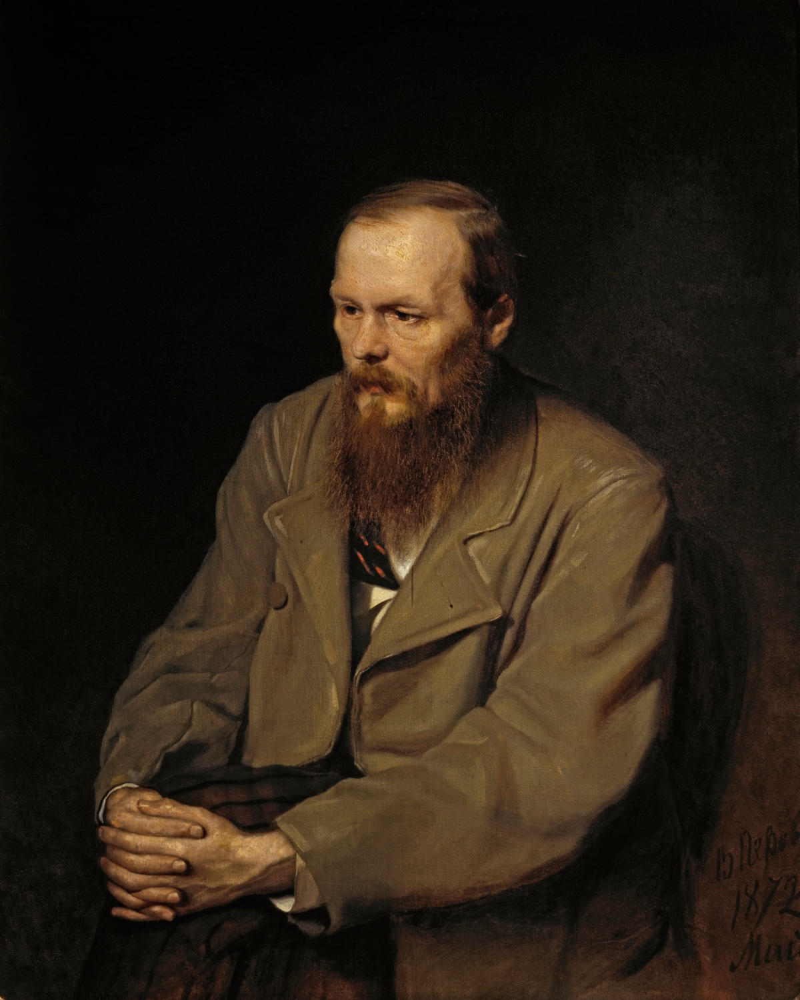
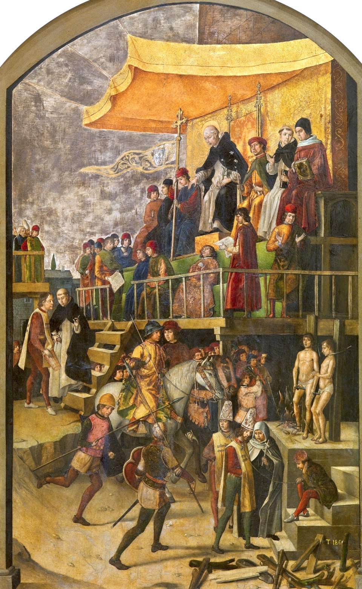
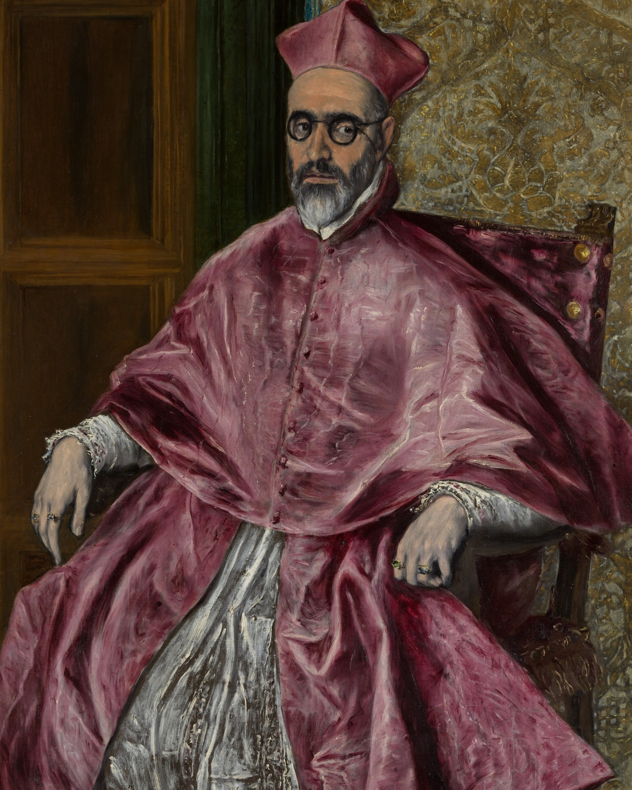

In Ivan Karamazov's story, Jesus raises a dead child and the cardinal watching has him arrested. The cardinal recognizes his prisoner. He intends to burn him anyway.
Ivan tells the story to his younger brother Alyosha, a monastery novice, over tea in a tavern. Before this chapter of The Brothers Karamazov begins, Ivan describes children tortured by adults and asks whether their suffering could be justified by a final reconciliation with God. Alyosha believes in Christ. Ivan wants an answer from him.
Dostoevsky was a Christian who planned an answer through the monk Zosima. Ivan's beliefs are among those the novelist meant to challenge.
The seven stops begin in "Rebellion," then follow the prison interview and the brothers' parting. Garnett's translation supplies the excerpts. The closing sections discuss later events, including the murder.

Stop 1 / Rebellion
Ivan can't love the person beside him
Ivan to Alyosha
"I could never understand how one can love one's neighbors. It's just one's neighbors, to my mind, that one can't love, though one might love those at a distance. [...] For any one to love a man, he must be hidden, for as soon as he shows his face, love is gone."
A sufferer smells bad, has a foolish face, or once stepped on your foot. In Ivan's account, that's enough to put people off. He remembers a story about a saint warming a sick beggar in his bed, then suspects the saint of performing a duty he found repulsive. Ivan can't imagine such love coming freely.
Alyosha answers that he has seen people love that way. His teacher Zosima recognizes the difficulty of loving someone at close quarters. Ivan calls Christlike love a miracle beyond ordinary human powers.
Children are Ivan's exception. He says he loves them even when they are dirty. Adults have eaten the biblical apple, know good and evil, and participate in wrongdoing. Children haven't. He limits his accusation to them, rejecting inherited guilt as a defense of their torture.
Stop 2 / Rebellion
The child praying in the cold
Ivan collects reports from newspapers and books. One concerns a five-year-old girl whose parents beat her and lock her overnight in a freezing privy. In the dark she strikes her little chest and prays for God to protect her. Ivan asks what knowledge of good and evil could possibly be worth this.
Ivan
"Why, the whole world of knowledge is not worth that child's prayer to 'dear, kind God'!"
Another report describes an eight-year-old serf boy who injures a landowner's favorite dog's paw with a stone. The landowner, a retired general, has the child stripped and hunted by his hounds before the boy's mother. The dogs kill him. Ivan asks whether shooting the general would satisfy their moral feelings. Alyosha says yes, then immediately calls his answer absurd.
Ivan is pleased to have stirred this fury in his brother. Later, though, he asks what hell for the torturers would repair: the children have already suffered. Punishment cannot restore the boy's life, and more suffering would spoil the promised harmony too.
Dostoevsky told his editor he had taken these accounts from print. That establishes what the novelist used, not independent verification of every detail. The scholarly notes to his letter trace the hound story to publications in 1860 and 1877.
Stop 3 / Rebellion
What would make the suffering worth it?
Ivan refuses the final harmony
"I don't want harmony. From love for humanity I don't want it. I would rather be left with the unavenged suffering. [...] It's not God that I don't accept, Alyosha, only I most respectfully return Him the ticket."
Suppose that in the end everyone understands why things happened, the dead rise, and the mother embraces her son's killer. Ivan imagines himself joining their praise of God. While he can still refuse, he wants to protect himself against consenting to that outcome.
The mother may forgive her own grief, Ivan says, but she cannot forgive the pain inflicted on her child. Even the child's forgiveness wouldn't give her that right. Ivan wants reconciliation and cannot accept it at this price. He would rather retain his indignation, even if it proves mistaken.
He gives Alyosha a smaller version of the problem. Would you build a world of lasting happiness if its necessary foundation were the torture and death of one child? Alyosha says he would not. Ivan asks his brother to apply this moral refusal to God's world.
Alyosha calls this rebellion. He also offers an answer: Christ gave his innocent blood for everyone and therefore has the right to forgive everyone. Ivan says he hasn't forgotten Christ. He has made up a story about him.
Stop 4 / The Grand Inquisitor
The crowd makes way for the guards
Ivan calls his unwritten prose story a poem. He places it in sixteenth-century Seville, where nearly a hundred people have been burned for heresy the day before. The chapter doesn't identify an actual execution or a particular year.
Christ appears among people who immediately recognize him. He heals a blind man. A little girl's funeral reaches the cathedral steps, and he tells her to rise. She sits up in her coffin, holding the white roses placed in her hand.
The cardinal watches her rise and orders Christ seized. The people who were kissing the ground under Christ's feet make way for the guards, then bow before the Inquisitor.
The Inquisitor enters the cell
"Why, then, art Thou come to hinder us? For Thou hast come to hinder us, and Thou knowest that."
That night the cardinal, almost ninety, visits the prisoner alone. He orders him to remain silent: everything Christ had to say has already been said, and the Church now administers it. He predicts that the same people who welcomed Christ will help build his fire tomorrow.
Alyosha objects that this picture is false even of much of Roman Catholicism. Ivan asks him to imagine one ruler who believes it, a former ascetic who can speak without disguise.

Stop 5 / The Grand Inquisitor
The cardinal's case for the weak
The Inquisitor accuses Christ
"By showing him so much respect, Thou didst, as it were, cease to feel for him, for Thou didst ask far too much from him [...] Respecting him less, Thou wouldst have asked less of him. That would have been more like love, for his burden would have been lighter."
The cardinal says Christ demanded a faith most people cannot sustain. If salvation requires exceptional strength, what becomes of everyone else? In his account, Christ's respect amounts to neglect of the weak.
He builds his case from the devil's three temptations, beginning with turning stones into bread. Christ refuses, saying people do not live by bread alone. The cardinal sees a missed chance to win obedience with food. He claims free people will never share bread well enough to feed everyone. After failing, they will surrender to whoever promises to feed them.
He admits that someone with plenty to eat may choose death without something to live for. People want a shared object of worship, one everyone agrees on, because disagreement brings division and killing. The ruler must govern their consciences as well as distribute bread.
The cardinal wants to relieve people of deciding whom to follow and how to distinguish good from evil. Christ's example leaves them choices; the Inquisitor offers to make their decisions. He expects them to exchange responsibility for peace.

Stop 6 / The Grand Inquisitor
What he offers instead
The second temptation asks Christ to jump from the temple and let angels catch him. The cardinal reads the refusal as a rejection of faith compelled by a display of power. He also recalls Christ refusing to come down from the cross to make his tormentors believe. Without such certainty, he argues, people will turn to sorcerers or make miracles of their own.
Christ has just raised the girl. The cardinal objects to his refusal to use divine power to secure universal submission. The miracle hasn't kept the crowd from obeying the guards.
The third temptation offers the world's kingdoms in return for worship of the devil. The Inquisitor says his Church accepted the sovereignty Christ refused. Its future empire will control food and conscience, ending the conflicts that freedom produces. He names its foundations as miracle, mystery, and authority. These means of control overlap throughout his speech.
The Inquisitor describes his bargain
"We have corrected Thy work and have founded it upon miracle, mystery and authority. [...] We are not working with Thee, but with him [...]"
His mystery requires obedience even against a person's conscience. If Christ's choice of a few strong followers is a mystery, the cardinal argues, his rulers may teach their own. They will authorize sins, decide who may live together and have children, and hear everyone's secrets. They will promise heaven while privately expecting nothing beyond death. Alyosha identifies the Inquisitor's atheism, and Ivan confirms it.
Ivan insists that this man could love humanity. The former ascetic has lost faith that people can meet Christ's demand. He accepts deception to give the weak bearable lives.
His subjects must remain helpless. He will distribute bread they have made themselves and handed over. Their marriages depend on obedience. He promises happiness after burning people and while threatening another execution. His care requires them to fear him and gives them no way to refuse it.
Dostoevsky shared the hostility to Roman Catholic power expressed in the poem. In a June 1879 letter, he also connects the speech's bread and Tower of Babel with the socialism he opposed. This is the author's polemic; neither group is obliged to accept the cardinal's bargain.
The Gospel passages behind the speech
The speech follows Matthew 4:1-11: bread, the temple, then the kingdoms. Luke 4:1-13 puts the kingdoms before the temple. Christ's replies concern God's word, refusing to test God, and worshiping God alone. The cardinal recasts the refusals as missed opportunities to rule.
Stop 7 / The Grand Inquisitor
The cardinal lets his prisoner go
Ivan ends the poem
"But He suddenly approached the old man in silence and softly kissed him on his bloodless aged lips. That was all His answer. The old man shuddered. [...] And he let Him out into the dark alleys of the town. The Prisoner went away."
Christ says nothing during the interview. After the kiss, the old man opens the door and demands that he never return. When Alyosha asks what happens to him, Ivan says: "The kiss glows in his heart, but the old man adheres to his idea."
The cardinal releases the prisoner without accepting his teaching. The kiss can be read as an act of the free love he condemns: Christ approaches the man who threatens him and demands no surrender. It changes the threatened execution. It doesn't establish that most people can bear the freedom he condemns.
Alyosha says the poem praises Christ. He rejects the cardinal's version of freedom and suspects worldly ambition beneath his self-sacrifice. Ivan has given Christ the act that ends the scene.
Ivan asks whether Alyosha will renounce him for his beliefs. Alyosha kisses him on the lips. Ivan thanks him and calls it plagiarism. As they leave, he says remembering Alyosha will help him keep his love of life. They part affectionately, still disagreeing.
What happens to "everything is permitted"
The formula appears outside the Inquisitor's speech. In Book II, chapter 6, another character reports Ivan's argument that without belief in immortality, nothing would be immoral. Ivan confirms his contention: "There is no virtue if there is no immortality." After the poem, Alyosha asks whether everything is lawful, and Ivan says he won't renounce the formula.
The familiar sentence "If God does not exist, everything is permitted" isn't the wording of Ivan's tavern reply. It compresses an argument developed across several conversations. Garnett uses both "everything is lawful" and "all things are lawful." Here "lawful" concerns moral permission.
Later, the servant Smerdyakov admits killing the brothers' father. He invokes Ivan's teaching and says Ivan's departure gave him permission to act. He is referring to their own conversations, not to overhearing this tavern story. Ivan recoils and resolves to give evidence. Their last interview, in Book XI, chapter 8, concerns his responsibility for what he wished and allowed as well as what he said.
Ivan's horror is a difficulty for his formula: he hasn't ceased to feel the force of wrongdoing. Earlier he rejected God's world because harming a child seemed unforgivable. He must now distinguish that refusal from giving anyone permission to do harm, and face the part he may have had in enabling the murder.
The reply through Zosima and Alyosha
Dostoevsky intended Zosima's life and teaching to answer Ivan. In his letter to Pobedonostsev of August 24, 1879, he worries whether Book VI will succeed. He describes an indirect answer through an artistic picture rather than a refutation of each proposition. He fears failure without conceding that Ivan has won.
Zosima returns to the neighbor Ivan finds impossible to love. In Book II, chapter 4, a woman imagines nursing the sick but admits she would give up if they were ungrateful. Zosima tells her that practicing love is demanding and often unrewarded. Benevolence toward humanity won't do the work for her.
Zosima on responsibility
"There is only one means of salvation, then take yourself and make yourself responsible for all men's sins, that is the truth, you know, friends [...]"
Zosima believes people's lives are bound together before God. A child hears your spiteful words as you pass. You may forget it; the child may carry the harm. He insists that responsibility for everyone is real, even when you cannot see how far your acts reach. This is a religious claim as well as advice about conduct.
The demand is difficult beside Ivan's insistence that the innocent must not pay for another's sins. Zosima asks listeners to take responsibility voluntarily. Making a victim's suffering serve everyone else's salvation would repeat the problem Ivan objects to.
After Zosima dies, his body begins to smell. People mock his holiness. Alyosha is shaken by the injustice to his teacher; the narrator distinguishes this from simply wanting a miracle. He recovers through his encounter with Grushenka, a woman others condemn, and the wedding at Cana read beside the coffin. In Book VII, chapter 4, he goes out resolved to love the world.
At the end, another child, Ilyusha, has died. Alyosha gathers his school friends and asks them to remember the boy and the good they shared. When they ask if they will rise and see one another again, he says yes. The final scene offers that care and the promise of resurrection. It never shows why this child's death had to happen.
Text and sources
The passages and short quotations come from Constance Garnett's translation of The Brothers Karamazov, published in 1912. Bracketed ellipses mark omissions, and curly quotation marks and apostrophes are straightened. The explanations are my reading. The chapter links give their context.
Publication, letters, and translation notes
The novel appeared in Russian in 1879-1880. An English extract of "The Grand Inquisitor" appeared in The Theosophist in November and December 1881, listed in the magazine's article register.
The May 10, 1879 letter to Lyubimov explains the children's reports and the planned answer through Zosima. The June 11 letter gives the author's political reading. Both links lead to the Russian text. The August letter is in Letters and Reminiscences, translated by S. S. Koteliansky and J. Middleton Murry (1923), pages 251-252. The letter's August 24 date follows the Julian calendar then used in Russia.
The paintings are public-domain works. Their museum records are linked in the captions. El Greco's portrait supplies the card image.